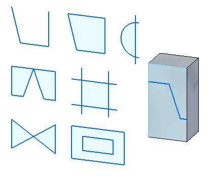
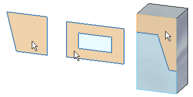
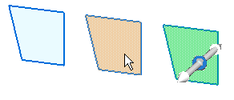

Regions
Definition
A region is a closed area formed by sketch elements or a combination of sketch elements and part edges. Use regions to create a solid feature consisting of planar and non-planar faces.
Regions are formed by the placement of 2D sketch geometry on sketch planes or part faces. Regions are created when a series of sketch elements or model edges form a closed area. Regions are a by-product of a closed sketch. Deselected regions appear with a shaded light blue color.
Region examples

Selecting a region
As the cursor moves over a region, the region appears with a shaded tan color.

When the region is selected, the region appears with a shaded green color.

Regions can be selected in both object-action and action-object workflows.